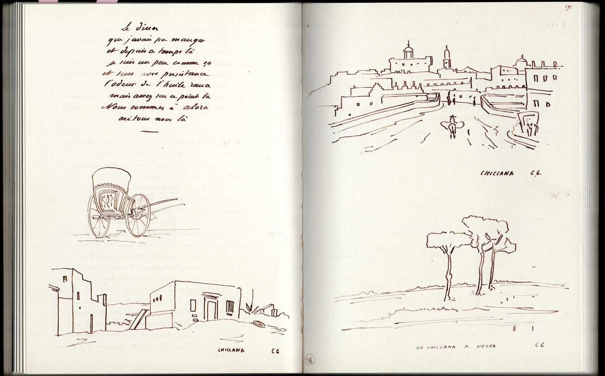
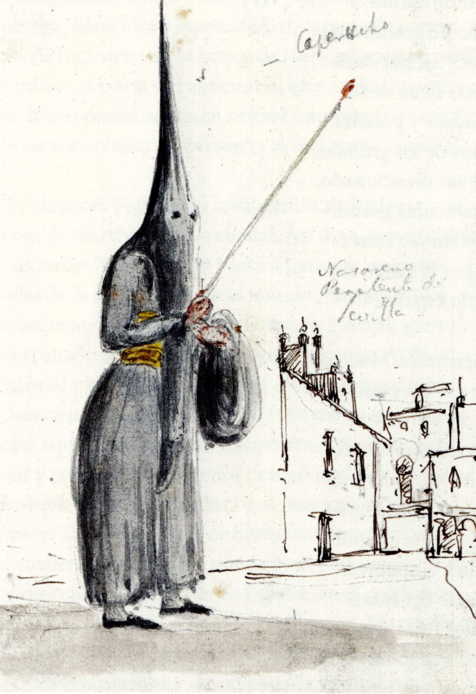
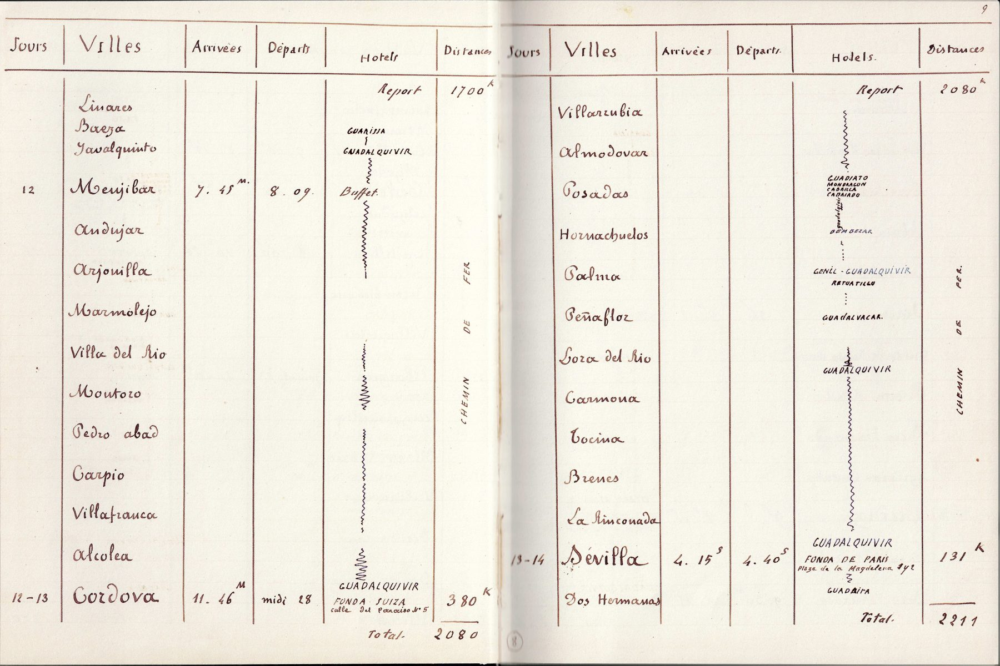
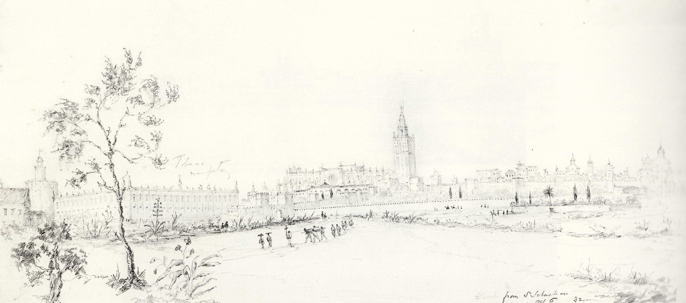
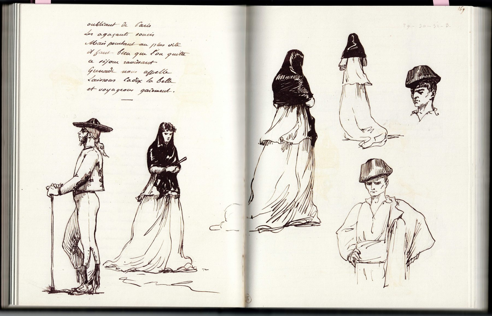
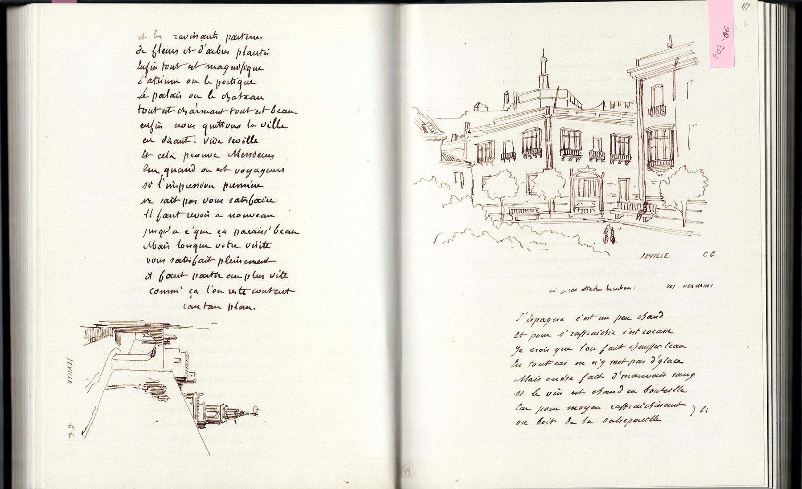

Charles GarnierEl viaje romántico · España, 1868
Itinerario · 30 estancias
Eje cronológico del viaje
Documentación histórica y reconstrucción
Charles Garnier (1825–1898) se formó en la École des Beaux-Arts de París y obtuvo en 1848 el Grand Prix de Rome1, que le permitió residir como pensionado en la Villa Medici. Durante esos años completó su formación con un viaje clásico en toda regla: recorrió Italia y viajó a Grecia —donde estudió el templo de Afaya en Egina— y a Constantinopla. Su propia biografía muestra así la vigencia, a mediados del siglo XIX, del viaje clásico institucionalizado por las academias. En 1861 ganó el concurso para la nueva Ópera de París, la obra que marcaría su carrera, y más tarde proyectó, entre otros edificios, el Casino de Montecarlo.
no se reproduce en la versión web.
Las fuentes disponibles para la reconstrucción de su viaje son el manuscrito de su diario de viaje, escrito en verso y reeditado en facsímil, que contiene un itinerario detallado y numerosos dibujos.
En mayo de 1868, con 42 años, Garnier era ya un arquitecto consagrado. La Ópera llevaba casi siete años en obras y su construcción se había complicado desde el principio por la presencia de agua en el subsuelo; más tarde, la guerra franco-prusiana (1870–1871) volvería a interrumpirla. En este contexto, el viaje a España se plantea como una forma de escapar temporalmente de la presión de una obra que se alargaba.
La edad de Garnier y el momento de su carrera plantean dudas sobre el carácter iniciático de este viaje. No es un viaje de formación, puesto que Garnier ya la había completado en Roma, ni presenta a priori la condición de umbral que define al viaje iniciático. Su inclusión responde, sobre todo, a su representatividad como viaje romántico, y su carácter iniciático se plantea aquí como hipótesis: la de un viaje que inicia al arquitecto en arquitecturas —la islámica y la del barroco español— ajenas a su formación académica, en un momento en que aún estaban abiertas decisiones importantes sobre la decoración de la Ópera. Esta hipótesis se discute en el apartado de influencia.


Garnier viaja acompañado de su esposa, Louise, y de dos amigos, Gustave Boulanger y Ambroise Baudry. El recorrido dura 29 días y describe un gran circuito por la península. Sale de París a comienzos de mayo y, tras pasar por Burdeos y Bayona, entra en España por San Sebastián; atraviesa Vitoria, Burgos y Valladolid y llega a Madrid, donde realiza su estancia más larga y desde donde visita El Escorial. Desde allí desciende por Toledo y Alcázar de San Juan hacia Andalucía: Córdoba, Sevilla, Cádiz, Tarifa, Algeciras, Málaga, Antequera, Granada y Jaén. El regreso, de nuevo por Alcázar de San Juan, discurre por el Levante —Elda, Alicante, Valencia, Castellón y Barcelona— y, por Girona y Perpiñán, vuelve a Francia, para llegar a París el 1 de junio. Andalucía, con cerca de diez días, es la región a la que dedica más tiempo.
La memoria de este viaje, Viaje a España2, cuyo manuscrito se conserva y ha sido reeditado en facsímil, incluye una tabla en la que Garnier registra el itinerario con un nivel de detalle extremo: anota las horas de salida y llegada de los trenes e incluso las poblaciones por las que pasa sin detenerse. Esta tabla es la base de la reconstrucción en el SIG.
El viaje fue posible, en buena medida, gracias a la densa red ferroviaria construida en España tras la Ley General de Ferrocarriles de 1855, que multiplicó por diez la extensión de la red nacional3.






Para entender la elección de los destinos hay que tener en cuenta el interés creciente que España despertaba entre la burguesía europea del siglo XIX. Obras como El barbero de Sevilla de Rossini (1816) o la novela Carmen de Prosper Mérimée (1845), que inspiraría después la ópera de Bizet (1875), habían construido una imagen romántica del país. El sur de España, en particular, atraía el interés historicista de los románticos por un arte y una arquitectura exóticos para el gusto europeo, fruto de la herencia islámica de la península:
«En el siglo XIX al igual que los románticos franceses y demás septentrionales, los británicos tomaban el camino de España atraídos por sus pintorescos paisajes y sobre todo por los monumentos islámicos de Andalucía. La Península Ibérica satisfacía así su ansia de conocer un Oriente próximo y asequible»4
El itinerario de Garnier se había popularizado ya entre viajeros de otras disciplinas, como el británico Richard Ford, que recorrió y dibujó la península entre 1830 y 1833, o el compatriota de Garnier Alexandre Dumas, que relató en De París a Cádiz5 el viaje que realizó en 1846 como cronista de la corte francesa.
Los dibujos de Ford muestran el mismo interés por las escenas, los tipos y las costumbres que caracteriza al viaje romántico.




En cuanto al registro, el diario de Garnier reúne los rasgos característicos del viajero romántico. Incluye versos en primera persona que describen las sensaciones del viaje, y sus dibujos recogen personas, atuendos y lugares pintorescos, además de, por supuesto, arquitectura. Los dibujos de arquitectura se diferencian claramente de los del viaje clásico: en su gran mayoría representan los edificios integrados en su entorno o en el paisaje. La arquitectura ya no se trata como un objeto que se estudia con minucioso detalle; se busca representar también su armonía y su relación con el entorno.
Influencia en la arquitectura posterior
La influencia del viaje a España en la producción posterior de Garnier no ha sido confirmada por la documentación que el arquitecto dejó a lo largo de su vida. Tampoco la investigación bibliográfica de este trabajo ha localizado estudios que analicen retrospectivamente esa influencia.
Cabría pensar, por tanto, que el viaje no tuvo un impacto como tal en su arquitectura y que fue más bien una escapada para huir temporalmente de la presión de las obras de la Ópera.
Sin embargo, la revisión de su obra posterior permite señalar algunos puntos en los que la arquitectura islámica, e incluso la barroca española, podrían haberle servido de inspiración.
Una primera hipótesis es que parte de la decoración interior de la Ópera de París, de corte neobarroco, que aún estaba por resolver cuando Garnier realizó el viaje, tomara alguna referencia de lo visto en España. Se trata, sin embargo, de una hipótesis que requeriría contrastarse con ejemplos concretos de teatros y espacios barrocos españoles.
Una segunda hipótesis es que el Casino de Montecarlo, de corte más orientalista, tomara motivos ornamentales de las arquitecturas vistas en el sur de España. Esta hipótesis tiene, no obstante, la dificultad de que Garnier ya había visitado Constantinopla durante su etapa de pensionado, en 1853, y pudo conocer allí arquitecturas con influencias de ida y vuelta entre Francia y el Imperio otomano, como el palacio de Dolmabahçe, entonces en una fase avanzada de construcción. La semejanza de una ornamentación más recargada en ambos casos hace que esta segunda vía parezca más plausible que la española. En cualquier caso, la ausencia de pruebas documentales impide afirmar una influencia directa, lo que refuerza el carácter de caso límite de este viaje dentro de la definición de viaje iniciático.
no se reproduce en la versión web.Ver en la fuente ↗